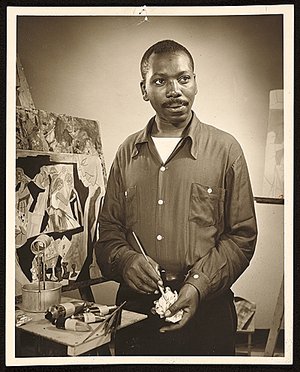

Jacob Lawrence’s art fixated on the theme of the human struggle (Much like blues). Lawrence’s parents arrived up north as a result of the Negro Migration, after the birth of their three children, his parents separated. Lawrence, his sister, and brother were raised by his mother. Lawrence was making art during the period of the Great Depression when the numbers for homelessness and poverty skyrocketed. Despite the Depression, the Renaissance persevered. Lawrence studied at Charles Alston’s studio beginning work professionally in the 1930s. His work is frequently referred to as a social realist.
However, his work is highly expressionist. Similar to many of his predecessors, and artists of his own time Lawrence was also interested in African art and Africanism. A theme shared with the musicians of the Harlem Renaissance. His social realism focused on the working class, civil rights, spirituality and lesiure time. Lawrence’s works display visual representations rhythms, breaks and modulations of jazz music. 